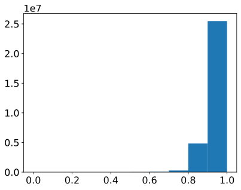
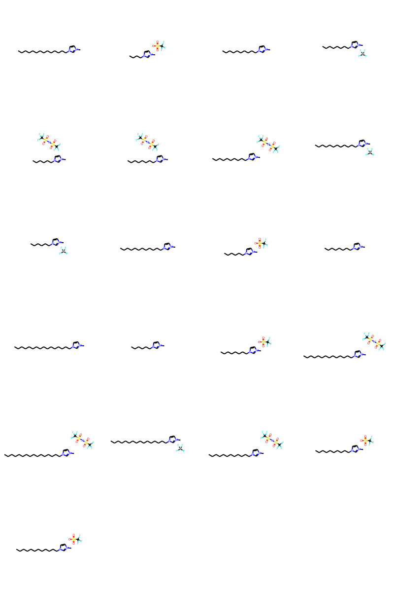
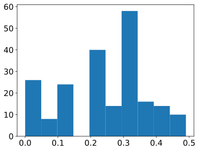

import os
import sys
import pandas as pd
import numpy as np
import operatorThis tutorials is made using references from : * https://github.com/PatWalters/practical_cheminformatics_tutorials * https://doc.datamol.io/stable/tutorials/Clustering.html * https://greglandrum.github.io/rdkit-blog/similarity/tutorial/2020/11/18/sphere-exclusion-clustering.html
from rdkit import Chem
from rdkit import DataStructs
from rdkit.Chem import Draw
from rdkit.Chem.Draw import IPythonConsole #Needed to show molecules
IPythonConsole.ipython_useSVG=True #SVG's tend to look nicer than the png counterparts
from rdkit.Chem.Draw import IPythonConsole
from rdkit.Chem import rdDepictor, rdMolDescriptors
import time
rdDepictor.SetPreferCoordGen(True)
import rdkit
%matplotlib inline
print(rdkit.__version__)2022.03.5import matplotlib.pyplot as plt
from matplotlib.pyplot import cm
# High DPI rendering for mac
%config InlineBackend.figure_format = 'retina'
# "Infinite" DPI vector output -- overkill
%config InlineBackend.figure_format = 'svg'
# Plot matplotlib plots with white background:
%config InlineBackend.print_figure_kwargs={'facecolor' : "w"}
plot_params = {
'font.size' : 22,
'axes.titlesize' : 24,
'axes.labelsize' : 20,
'axes.labelweight' : 'bold',
'xtick.labelsize' : 16,
'ytick.labelsize' : 16,
}
plt.rcParams.update(plot_params)# clustering specific imports from Rdkit
from rdkit.Chem import DataStructs
from rdkit.ML.Cluster import Butina
from rdkit.SimDivFilters.rdSimDivPickers import MaxMinPickerx = pd.read_csv('./data/small_molecule_data/tox21.csv')x.sample(5)| smiles | NR-AR | NR-AR-LBD | NR-AhR | NR-Aromatase | NR-ER | NR-ER-LBD | NR-PPAR-gamma | SR-ARE | SR-ATAD5 | SR-HSE | SR-MMP | SR-p53 | |
|---|---|---|---|---|---|---|---|---|---|---|---|---|---|
| 439 | CC(Cl)(Cl)C(=O)O | 0.0 | 0.0 | 0.0 | 0.0 | 0.0 | 0.0 | 0.0 | 0.0 | 0.0 | 0.0 | 0.0 | 0.0 |
| 5205 | Nc1ccc([As](=O)(O)O)cc1 | 0.0 | 0.0 | 0.0 | 0.0 | 0.0 | 0.0 | 0.0 | 0.0 | 0.0 | 0.0 | 0.0 | 0.0 |
| 7260 | CCCCOC(=O)CC | 0.0 | 0.0 | 0.0 | 0.0 | 0.0 | 0.0 | 0.0 | 0.0 | 0.0 | 0.0 | 0.0 | 0.0 |
| 2195 | COC(=O)c1ccccc1S(=O)(=O)NC(=O)Nc1nc(C)cc(C)n1 | 0.0 | 0.0 | 0.0 | 0.0 | 0.0 | 0.0 | 0.0 | 0.0 | 0.0 | 0.0 | 0.0 | 0.0 |
| 5563 | Cc1ccc(C)c(OCCCC(C)(C)C(=O)O)c1 | 0.0 | 0.0 | 0.0 | 0.0 | 0.0 | 0.0 | 0.0 | 0.0 | 0.0 | 0.0 | 0.0 | 0.0 |
mol_obj = [Chem.MolFromSmiles(smi, sanitize=True) for smi in list(x['smiles'])]
len(mol_obj)[16:41:47] WARNING: not removing hydrogen atom without neighbors7831Generate fingerprints for the molecules - using Morgan FP2
from rdkit.Chem import rdMolDescriptors
fps = [rdMolDescriptors.GetMorganFingerprintAsBitVect(m, 3, nBits=2048) for m in mol_obj]Calculate distance matrix for the molecules
dists = []
n_fps = len(fps)
for i in range(1, n_fps):
sim = DataStructs.cDataStructs.BulkTanimotoSimilarity(fps[i], fps[:i])
dists.extend([ 1-x for x in sim ])plt.hist(dists);
Clustering the molecules based on the FPs and the distance matrix
cutoff_distance = 0.35 # Any molecules closer than this are kept in one cluster so <= cutoff_distance
mol_clusters = Butina.ClusterData(dists, n_fps, distThresh=cutoff_distance, isDistData=True)
cluster_id_list = [0]*n_fps
for idx, cluster in enumerate(mol_clusters, 1):
for member in cluster:
cluster_id_list[member] = idx# Add the cluster_id to the dataframe
x['cluster'] = cluster_id_listx['cluster'].value_counts(sort=True, ascending=False)2 21
1 21
3 15
5 13
4 13
..
4643 1
4644 1
4645 1
4646 1
689 1
Name: cluster, Length: 6675, dtype: int64Calculate intra cluster similarity for the molecules
x_42 = x.loc[ x['cluster'] == 1]x_42.shape(21, 14)Draw.MolsToGridImage( [mol_obj[x] for x in x_42.index], subImgSize=(200, 200), molsPerRow=4)
# intra-cluster similarity
res = []
cfps = [ fps[i] for i in x_42.index ]
for i in range(1, x_42.shape[0]):
sim = DataStructs.cDataStructs.BulkTanimotoSimilarity(cfps[i], cfps[:i])
res.extend( [1-x for x in sim] )plt.hist(res)(array([26., 8., 24., 0., 40., 14., 58., 16., 14., 10.]),
array([0. , 0.04901961, 0.09803922, 0.14705882, 0.19607843,
0.24509804, 0.29411765, 0.34313725, 0.39215686, 0.44117647,
0.49019608]),
<BarContainer object of 10 artists>)
Pick the most diverse molecules from the cluster
Implementation of Sphere exclusion algorithm (also called Leader) from Roger Sayles.
from rdkit.SimDivFilters import rdSimDivPickers
lp = rdSimDivPickers.LeaderPicker()threshold = 0.65 # <- minimum distance between clusters
picks = lp.LazyBitVectorPick(fps, len(fps), threshold)
len(picks)3291